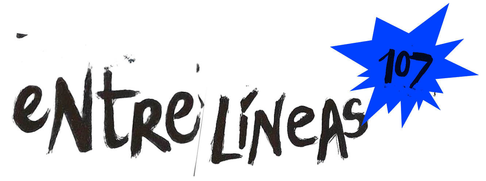

DIY
ZINE
EDICIÓN
ÚNICA
fanzine digital
un recorrido de historias

↓ tocá para abrir ↓
Buenos
Aires · paradas de colectivo · sin firma
01 · viaje de una historia
VIAJE DE
UNA HISTORIA
Fanzine de anécdotas · 15 de mayo · pág. 3
"Esperando el 107"
PARADA DE ORIGEN — CIUDAD
UNIVERSITARIA
"Hoy me senté en el pasto antes de cursar y pensé en todo lo que todavía no
sé."
La historia viajó por toda la línea, continuada en cada parada por quien la encontraba.
se completó sola,
de mano en mano →
el recorrido · trazado con
marcador
Punto de inicio
"...pensé en todo lo que todavía no sé."
— quien empezó la historia
Segunda parada
"tranqui, yo no sé nada y sigo viva. el no-saber es parte del plan."
Tercera parada
"nadie sabe nada pero todos
hacemos como que sí. ese es el secreto."
Última parada
"esperar, no saber — todo eso ya
es algo. seguí."
✦ 4 personas continuaron esta historia a lo largo de 18 km.
02 · participación por parada
¿DÓNDE SE
ESCRIBE
MÁS?
Cada parada de la 107 tiene su densidad
de tinta. Más aerosol = más historias dejadas ahí. Pasá por encima de cada mancha.
saturado · mucha escritura
media
apenas marcado
Ciu. Universitaria revienta de tinta. Las
esperas largas generan más escritura. ✦
03 · temáticas
¿DE QUÉ
HABLA
LA GENTE?
Cada tema es una mancha de
aerosol que se rellena según cuánto aparece. Tocá una para leer frases reales.
estudios
28%
amistad
20%
amor
19%
sueños
15%
trabajo
10%
familia
8%
Tocá un tema para leer lo que dejaron escrito...
04 · la estantería
LIBROS MÁS
INTERVENIDOS
El grosor y el desgaste de cada fanzine cuentan cuánta gente lo
agarró. Pasá por encima de cada lomo.
anécdotas52
dibujos84
historias34
El de dibujos está hecho percha de
tanto uso. La imagen le gana a la palabra cuando hay poco tiempo. ✦
📘 dibujos · 84 aportes · 57 págs · 3 semanas
circulando
📗 anécdotas · 52 aportes · 38 págs · 2 semanas
📕 historias · 34 aportes · 21 págs · 10 días
05 · horarios
¿CUÁNDO
SE ESCRIBE
MÁS?
Un colectivo recorre la grilla dejando estela de tinta donde más se escribe. Cuanto más oscuro, más manos pasaron
por ahí.
8–10h · pico mañana
13–15h · mediodía
18–21h · tarde-noche
El 107 tarda tanto en llegar que aburre da tiempo para dos historias. ✦
CRECIMIENTO
DE LA RED
"entre líneas,
nos encontramos."